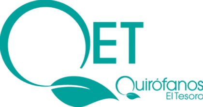
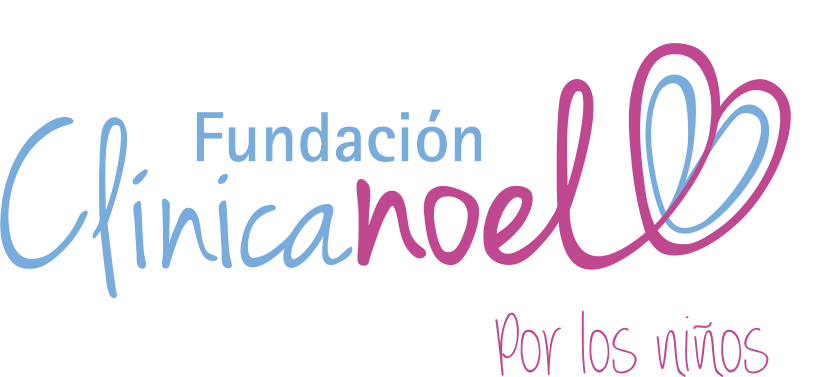

RESPALDO & SEGURIDAD
Centros Quirúrgicos Certificados
La Doctora Ana María Salinas opera a sus pacientes en clínicas de alta complejidad que cumplen con estrictas normas de bioseguridad e infraestructura especializada.
Atención Particular
Cirugía Plástica & Estética
Los procedimientos de cirugía estética particular son realizados en quirófanos de vanguardia con alta tecnología médica:

Quirófanos El Tesoro (QET)

IQ InterQuirófanos
Especialidad Pediátrica
Cirugía Infantil & Reconstructiva
Las intervenciones reconstructivas en niños y pacientes pediátricos se llevan a cabo en un centro hospitalario líder e integral:
